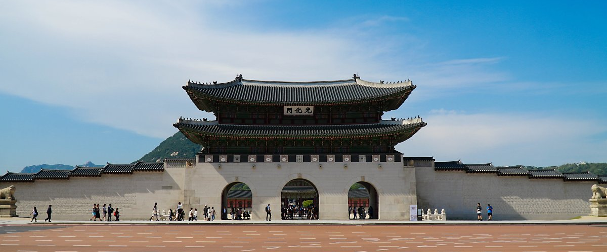

경복궁 관리소
조선왕조 제일의 법궁
사적 제 117호 경복궁(景福宮)

2010
2019.01문화재청 궁능유적본부 경복궁관리소로 개편
2000
문화재청이 차관청으로 승격2004.01
1990
1999.05문화재청으로 승격 및 문화재청 경복궁관리소로 명칭 변경
1998.02문화재관리국 경복궁관리소로 명칭 변경
1960
구황실재산사무총국이 문화재관리국으로 개편1961.10
1940
1948.08구황실재산사무총국 경복궁사무소 발족
1860
경복궁 중건1867.11
1390
1395.09경복궁 창건